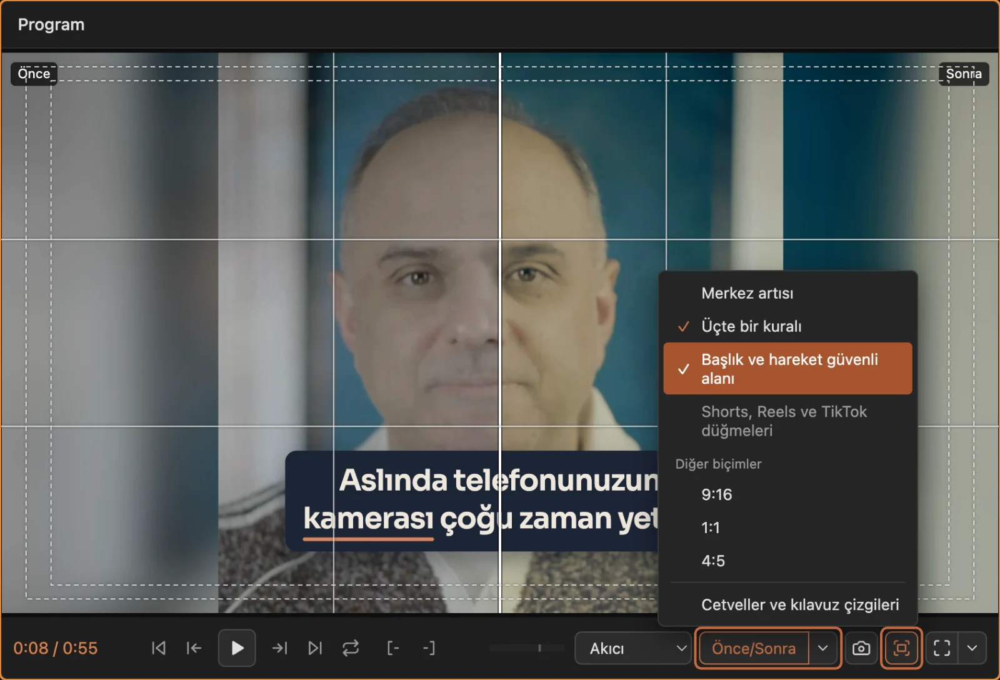
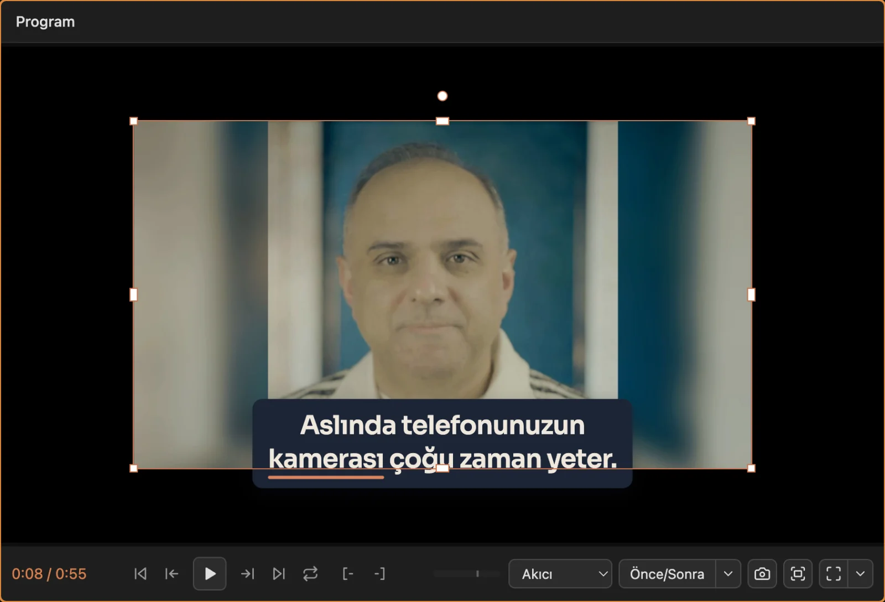

Program
Program, kesimi dışa aktarılacağı gibi gösterir. Çubuğunda oynatma, görüntü araçları ve tam ekran var; görüntünün kendisi elle taşınır, boyutlanır ve kırpılır.

Oynat
Boşluk tuşu oynatır ve durdurur. Soldan düğmeler: zaman, Başa git, Önceki kesime git, oynat, Sonraki kesime git, Sona git, döngü, In ve Out. J, K ve L geri oynatır, durdurur, ileri oynatır; I ve O In ve Out koyar.
Oynatma kalitesi: Akıcı, telefonun 4K ve HEVC videolarını hafif bir kopyadan oynatır; Tam kalite dosyanın kendisini oynatır, hızlı bilgisayarlar için. Dışa aktarma her zaman tam kalitedir.
Kılavuzlar
Kılavuzlar düğmesi, yerleştirmene yardım eden çizgileri ve çerçeveleri gösterir. Dışa aktarılan videoya hiç girmezler.
- Merkez artısı ve Üçte bir kuralı.
- Başlık ve hareket güvenli alanı: yazının her ekranda güvende olduğu yer.
- Shorts, Reels ve TikTok düğmeleri: bu uygulamaların dikey videonun üstüne düğmelerini koyduğu yerler.
- Diğer biçimler (9:16, 1:1, 4:5): dikey ya da kare bir kopyanın kişiyi izleyerek nereden kırpacağı.
- Cetveller ve kılavuz çizgileri: kılavuz çizgisi eklemek için cetvelden sürükle, kaldırmak için geri sürükle.
⌘ ' (Ctrl ') hepsini gizler ya da gösterir.
Önce ve Sonra
Önce/Sonra, görüntüyü renk ayarların olmadan gösterir. Menüsünde Önce, Sonra, Bölünmüş görünüm (ikisi yan yana, bir çizgiyle ayrılmış) ve Kapalı var. Kaydın üstündeki başlık gibi klipler olduğu gibi görünür.
Görüntüde taşı, boyutlandır, kırp
İmlecin altındaki klibi seçmek için görüntüye tıkla. Sonra:
- taşımak için sürükle;
- boyutunu değiştirmek için bir köşesini sürükle;
- kırpmak için bir kenarını sürükle;
- döndürmek için üstündeki daireyi sürükle.
Sürüklerken yerine yapışır; serbestçe sürüklemek için Alt'ı, merkezi korumak için Shift'i basılı tut. Bir başlıkta ya da grafikte kenarlar da biçimini koruyarak boyutlandırır, Alt ise kırpar. Kesin sayılar Klip sekmesinde.

Tam ekran ve ikinci ekran
Tam ekran düğmesi izleyiciyi ekranda tek başına gösterir (Görüntüyü Tam Ekran Yap, ⇧ ⌘ F); Esc ile çıkarsın. İkinci bir ekran bağlıysa menüsünde Görüntü diğer ekranda çıkar.
Kare dışa aktar
Fotoğraf makinesi düğmesi oynatma kafasındaki kareyi resim olarak kaydeder (Kareyi Dışa Aktar, ⇧ ⌘ E).